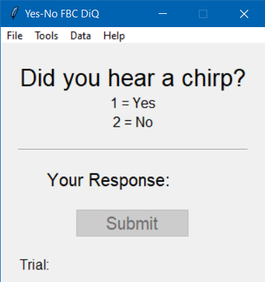
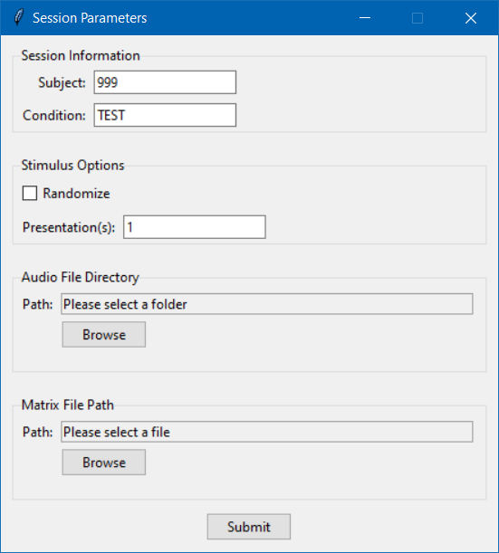
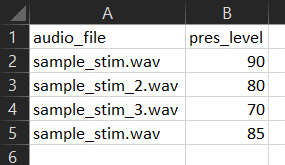
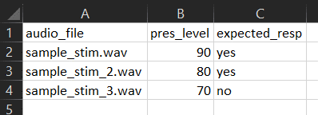
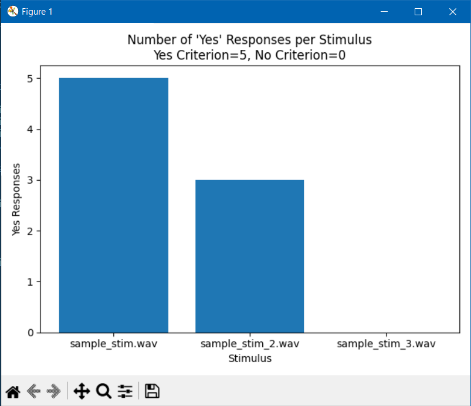

This controller is a simple yes/no presenter; it is not adaptive. Responses can be collected using a numberpad. If a data key is provided in the matrix file, responses are categorized as signal detection proportions (i.e., hits, misses, false alarms, correct rejections). If no data key is provided in the matrix file, a count of responses per stimulus is returned.
File>Session Info to provide:The Yes-No controller is easy to use. After providing session information and starting the task, the first audio file will be presented. Afterwards, the subject will have unlimited time to respond using a numberpad, where 1 = "yes" and 2 = "no." Subjects can toggle between yes and no, and only the currently selected option will be recorded when the "Submit" button or Enter key is pressed.
Upon submitting a response, the next audio file will automatically be presented.
The trial counter will display the current trial number, as well as the total number of trials.

Opens a new window to specify parameters for the session.

quiet_aided. 1 must be entered. Use the "Browse" button to navigate to the directory containing all audio files. Files must be in .wav format.
Use the "Browse" button to navigate to your matrix file. Your matrix file should contain all the stimuli you would like to present for a given session, as well as the presentation level for each stimulus. The matrix file must be organized as pictured below, including the header names.
There are two types of matrix files. First, you can simply provide the stimuli and presentation levels. Doing so will result in data analysis that counts the number of "Yes" responses for each stimulus.

Second, you can provide an additional column containing the expected response for each stimulus (see below). Providing a data key column allows for the calculation of signal detection proportions (i.e., hits, misses, false alarms, and correct rejections).

Navigating to File>Start Task begins the yes/no task. Make sure to specify the session parameters by navigating to File>Session Info before beginning.
Closes the application. Any data collected prior to quitting will be saved.
The Audio Settings window allows you to select an audio device and assign speakers for playback.
Device Selection. The Audio Settings window displays available audio devices in a table (see lower part of image below). Simply click to choose the desired device. Your selection will be highlighted in blue.
Speaker Assignment. To assign a speaker for playback, enter the speaker/channel number in the entry box (see upper part of image below). Note that you must provide a speaker for each channel in the audio file. For example, if your stimulus has eight channels, you must provide a list of eight speakers. Separate numbers with spaces when providing a list of speakers. For example: 1 2 3 4 5 6 7 8.
The Calibration window provides a simple way to calibrate your stimuli using a sound level meter (SLM).
Calibration Stimulus. You can choose to use the built-in white noise, or provide a custom file for the calibration signal (top group in image below).
Playback Controls. Use the "Level (dB)" entry box to adjust the playback level in dB FS (middle group in image below). The "Play" and "Stop" buttons allow you to start and stop the audio playback.
Measured Level. Use a SLM to measure the level of the calibration signal and enter the SLM reading into the "SLM Reading (dB)" entry box (bottom group in image below). Click submit, and the application will calculate an offset so that you can specify presentation levels in dB (whichever type of dB you set the SLM to when measuring). Note that the "Submit" button is disabled until you click the "Play" button.

Opens a system file browser where you can navigate to the directory containing output from this application. Once the directory has been provided, summary data specifying the number and type of responses to each stimulus will be generated. Specifically, the number of "Yes" responses are counted for each stimulus.
Data are returned as a plot, as well as three .csv files stored in a directory called Results.
The title of the plot contains the number of "Yes" responses possible (i.e., the number of presentations of a given stimulus).

pyinstaller --noconfirm --onefile --windowed --add-data "C:/Users/MooTra/Code/Python/yes-no/assets/cal_stim.wav;." --add-data "C:/Users/MooTra/Code/Python/yes-no/assets/README;README/" "C:/Users/MooTra/Code/Python/yes-no/controller.py"
Please use the contact information below to submit bug reports, feature requests and any other feedback.